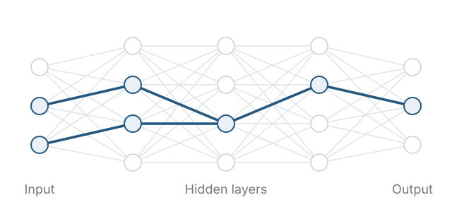

<figure style="margin:0;font-family:Inter,Arial,sans-serif">

<figcaption style="margin:14px 0 0;font:13px/1.6 Inter,Arial,sans-serif;color:#777"><span style="display:inline-block;width:18px;height:3px;vertical-align:middle;background:#245880;margin-right:5px" aria-hidden="true"></span>The blue highlighted neurons and connections form a circuit. </figcaption>
</figure>
